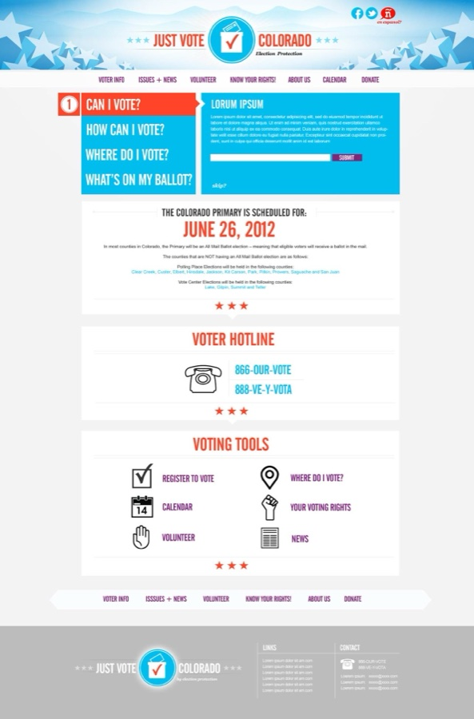
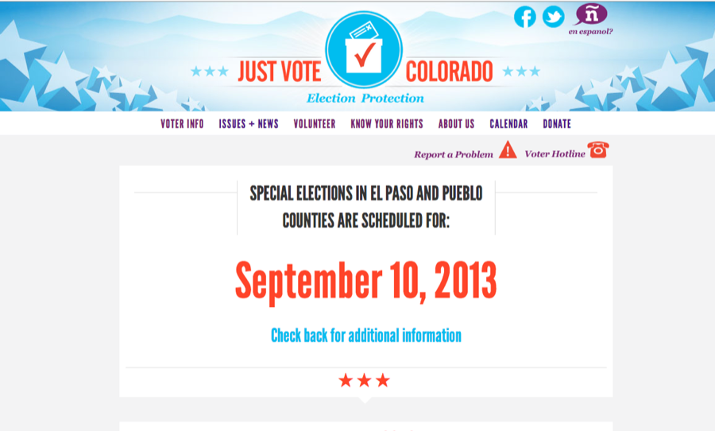
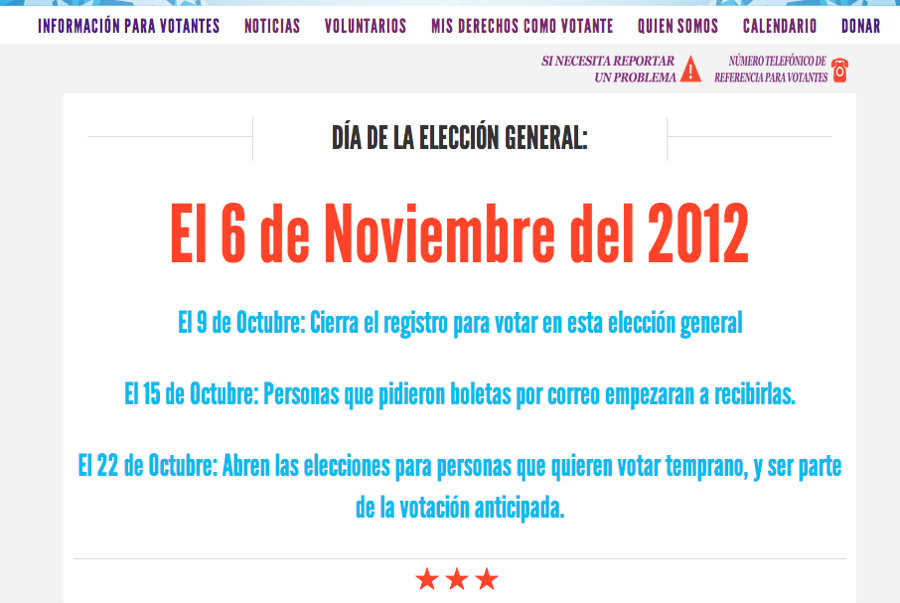

Nº 07 · Habitat I — Democracy & elections
Just Vote Colorado
A one-stop-shop for Colorado's voters - helping them find their registration status, early vote location, polling place & election center location, ballot drop locations - AND what's on their ballot, with Common Cause Colorado.
- First observed
- 2012
- With
- Common Cause Colorado
Created a nonpartisan voter information clearing house for the Colorado C3 state table - included ability for voters to check their voter registration state, find where and how they could vote (which varies in Colorado from county to county), and find what was on their ballot. Most of this information was also available in Spanish on the site. Over 72,000 Coloradans used the site over the course of the election cycle.
The site utilized the Target Smart API along with Google Maps to find their location and information in the voter file, and was built on TextPattern and Knockout JS.
Plates · from the field



Field notes